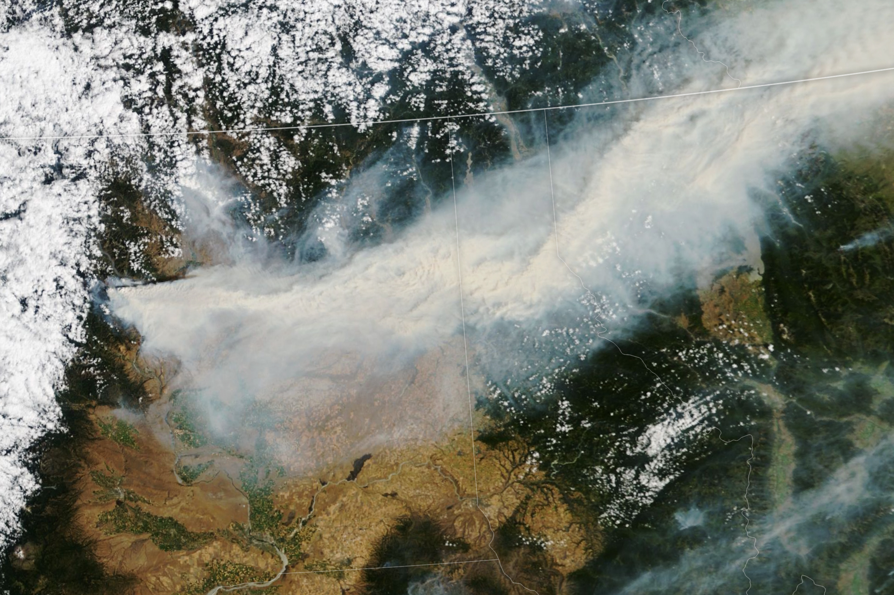

A New Jersey resilience portfolio · G6 LLC
Distributed energy & flood resilience (HVEH) · wildfire-smoke air quality
Pablo Nogueira Grossi · Newark, New Jersey · g6llc@proton.me
Two threads of my work point at the same New Jersey problem from opposite ends: the infrastructure that keeps a community running when conditions turn, and the air that community has to breathe when they do. One is about energy and water; the other about smoke and health. Together they are a single argument — New Jersey needs resilience built from the ground up, and monitored honestly.
Thread one · Energy & flood resilience Concept
A proposed approach to distributed, low-head hydrokinetic generation that draws steady power from the flow already moving through New Jersey’s rivers and channels — without the dams or large head-drops conventional hydropower needs. The design goal is a year-round baseload that sits exactly where two municipal needs overlap: local power and stormwater / flood resilience.
The Second River corridor through Belleville and Newark is the worked example: a place where distributed generation and flood management could be designed together rather than fought separately — power when the grid is stressed, and managed flow when the water rises.
Status: an engineering concept and development case, not a deployed system. The value to a municipality or an authority is in the pairing — resilience infrastructure that earns its keep on ordinary days and matters most on the worst ones. Background →
Thread two · Air quality & public health Published
Through 2026, smoke from Canadian and western wildfires has repeatedly driven New Jersey into unhealthy air. The state issued Code Red alerts and the NJ Department of Health told residents to stay indoors. This is Newark’s sky, not a distant event.

My published work models that transcontinental transport — how smoke rides the jet for thousands of kilometers and degrades downwind air — with a reproducible pipeline relating fine particulate (PM2.5) to atmospheric mixed-layer depth. It turns a satellite image into something a public-health or emergency-management team can reason with.
Transcontinental wildfire-smoke transport, with reproducible data pipeline — Zenodo 10.5281/zenodo.21431505. Read the chapter →
Resilience is not one system; it is the habit of designing for the bad day before it comes. HVEH is that habit applied to power and water; the smoke work is that habit applied to air and health. Both are grounded in New Jersey, both are built to be useful to the people who actually make infrastructure and public-health decisions here, and both come with an honest account of what is proven and what is still a proposal.
This portfolio accompanies a broader dossier of published research and applied work. See the full portfolio →